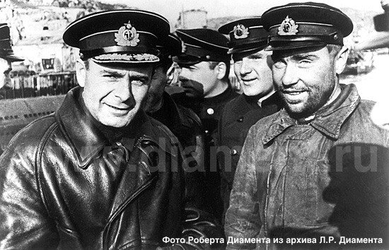
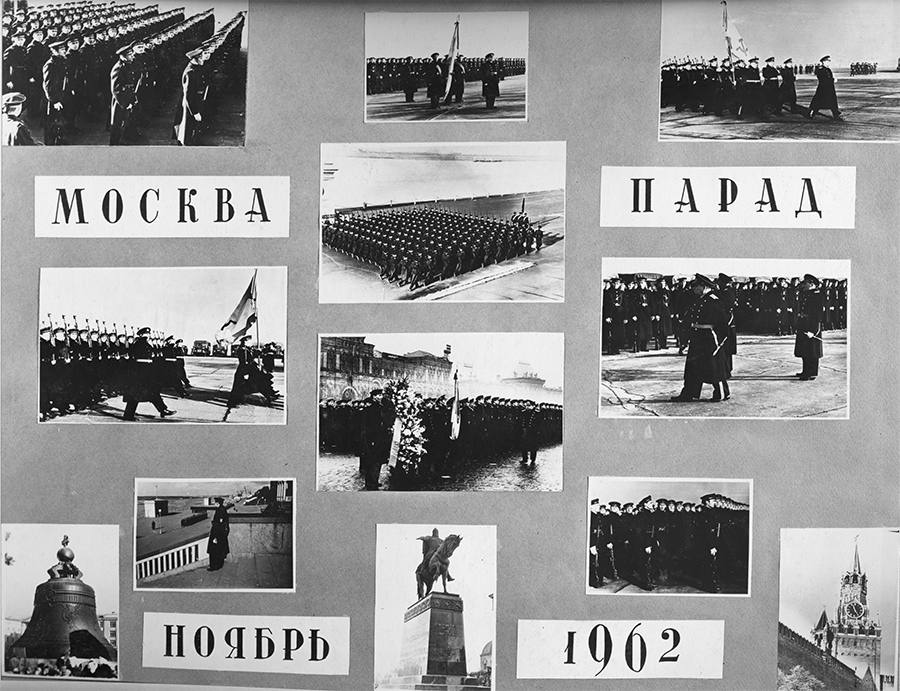
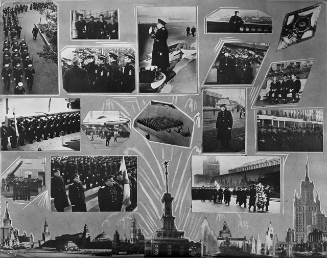
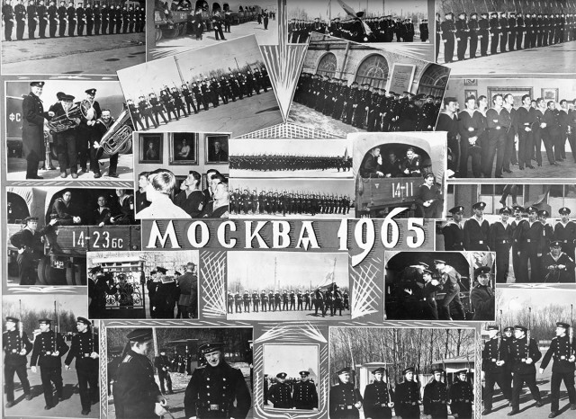

Моросящий дождь и желтые листья под ногами, грустное осеннее настроение…
Много лет назад здесь, в Москве мы завершали подготовку к параду 7 ноября. Участие в московском параде для нас было первым. Мы ежегодно проходили по Дворцовой площади в Питере 7 ноября и 1 Мая, но в московском параде военно-морские училища участвовали по очереди. 7 ноября 1962 года настала наша очередь.
Я открыл выпускной альбом, в котором три листа посвящены нашему участию в московских парадах. Внимание привлекла фотография плотного адмирала, который был назначен в наше училище первым замом начальника и по должности руководил строевой подготовкой, в том числе, естественно, и подготовкой к парадам. Мы многое о нем знали. Еще не так много времени прошло после окончания войны и мы имели возможность послушать рассказы о ней непосредственно из уст ее героев. Это сейчас не составит труда набрать имя и прочитать множество материалов об адмирале. Пожалуй, основная часть этих материалов – это повторение рассказа самого Арванова о том, как он стал родоначальником одной их флотских традиций отмечать победы салютом с борта подводной лодки при возвращении на базу. Он «подсмотрел» эту традицию у англичан, четыре лодки которых базировались в портах Северного флота, и в нужном месте и в нужное время воспроизвел ее на своем корабле.

Встреча Н.А. Лунина из очередного похода
Слева направо: Командующий СФ вице-адмирал А.Г. Головко, командир БЧ-3 лейтенант З.М. Арванов, заместитель командира по политической части капитан 3 ранга военком С.А. Лысов и командир Краснознаменной подводной лодки «К-21» Герой Советского Союза капитан 2 ранга Н.А. Лунин
Нам повезло. Нашими командирами были участинки боевых походов на подводных лодках в годы войны. В том числе, и моряки-лунинцы. Об одном из них – капитане 1 ранга В.Ю Брамане, командире электромеханической боевой части знаменитой лунинской ПЛ К-21, я уже упоминал. Вторым был контр-адмирал Арванов. Он служил на лунинской лодке сначала командиром минно-торпедной боевой части, потом помощником командира и наконец в 1944 году стал командиром знаменитой К-21.
Вот те листы из выпускного альбома, о которых я говорил.. Арванов на втором листе на фотографии с «матюгальником» в руке и на фото, где он стоит рядом с Военно-Морским флагом.
Последний лист – о подготовке к параду 1965 года. Это был первый парад в Москве в День Победы после известного парада 1945 года. Наше училище выбрали потому, что все помнили блестящее прохождение его в 1962. Мы, по-моему, не подвели и в 1965. Каждому участнику парада была выдана медаль в честь 20-летия Победы. Это была первая наша медаль на флоте.

 |
(кликабельно) |
 |
(кликабельно) |